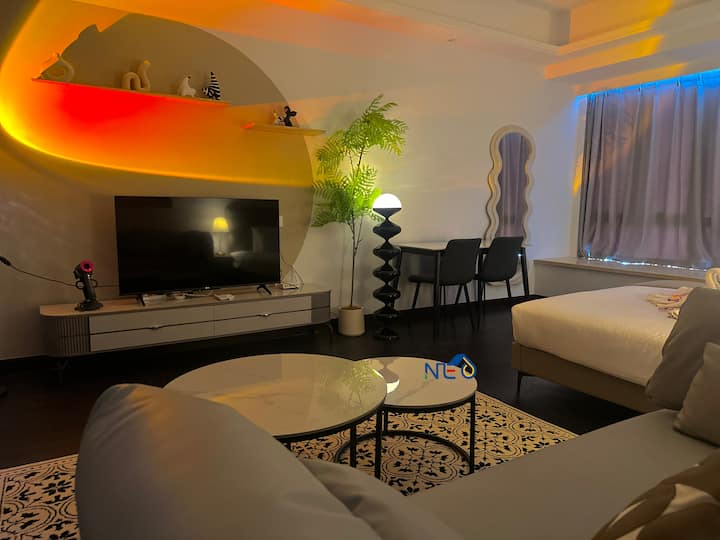

가장 추천시데멘 3박
논과 아궁산을 바라보며 쉬기 좋은 곳입니다. 논길 산책, 발리 요리 수업, 직조나 은공예, 뜨라가 와자 래프팅 가운데 하루에 하나만 골라도 충분합니다. 길리와 분위기가 겹치지 않고 숙소에서 쉴 시간도 넉넉합니다.
파당바이에서 약 30분에서 1시간차량은 IDR 200k에서 350k 정도입니다. 시데멘에서 울루와뚜까지는 약 3시간, IDR 600k 선으로 예상합니다. 구글 지도
길리 에어에서 3박, 길리 트라왕안에서 2박한 뒤 발리 동부와 남부를 여행합니다.


누사두아에서 길리로 들어간 뒤 파당바이로 돌아와, 발리 동부에서 남부로 내려오는 동선입니다.
길리에서 바다를 충분히 즐긴 뒤에는 분위기를 바꿀 수 있습니다. 세 지역 가운데 시데멘이 전체 동선과 가장 잘 맞습니다.
논과 아궁산을 바라보며 쉬기 좋은 곳입니다. 논길 산책, 발리 요리 수업, 직조나 은공예, 뜨라가 와자 래프팅 가운데 하루에 하나만 골라도 충분합니다. 길리와 분위기가 겹치지 않고 숙소에서 쉴 시간도 넉넉합니다.
시장, 미술관, 요리 수업과 공연까지 선택지가 많습니다. 처음 방문하는 우붓이라면 가장 풍성한 일정을 만들 수 있지만 교통 체증과 많은 관광객은 감안해야 합니다. 파당바이에서 바로 이동하면 아메드보다 동선이 짧습니다.
USAT Liberty가 분명한 목적이라면 아메드 일정도 좋습니다. 다만 길리 다이빙 뒤에 검은 해변과 난파선 다이빙이 이어지고, 마지막 날 울루와뚜까지 장거리 이동이 필요합니다.
기차와 MRT는 탑승 위치까지 안내합니다. 발리 장거리는 버스보다 예약 차량이 편리합니다. 요금은 2026년 8월 30일에 확인했습니다.
교통비 옆에 같은 기준으로 계산한 원화 예상 금액을 함께 표시합니다.
실제 카드 청구액은 결제 시점 환율과 해외 이용 수수료에 따라 달라질 수 있습니다.
도심 한가운데 솟은 페트로나스 트윈타워와 말레이 음식으로 잘 알려진 도시입니다.
싱가포르 국경을 마주 보는 도시로, 하루 쉬면서 현지 음식을 즐기기 좋습니다.
USS를 중심으로 즐긴 뒤, 저녁에는 가든스 바이 더 베이와 마리나베이 야경을 감상합니다.
파도가 잔잔한 해변과 큰 리조트가 모여 있습니다. 첫날은 배편을 위한 숙박, 마지막에는 라구나에서 휴식을 즐깁니다.
차가 없는 작은 섬입니다. 동쪽 바다에서는 거북이를 보기 좋고, 서쪽은 조용한 일몰로 유명합니다.
세 섬 중 식당과 다이브숍이 가장 많습니다. 동쪽은 활기차고 서쪽은 일몰이 좋습니다.
아궁산 아래로 논과 계곡이 이어지는 마을입니다. 바다 대신 산과 논을 보며 쉬고, 작은 공방이나 요리 수업을 즐기기 좋습니다.
검은 화산 해변과 다이빙으로 유명합니다. 뚤람벤의 USAT Liberty 난파선이 이 구간의 중심입니다.
부킷 반도의 절벽과 일몰로 유명합니다. 마지막 날은 케착을 보고 짐바란 해변에서 저녁을 즐깁니다.
확정된 예약과 선택이 필요한 항목을 구분해 안내합니다.
말레이시아항공은 발권되었습니다. USS는 9월 26일 성인 입장권 2장이 USD53.34씩 예약되었으며 모두 환불이 불가합니다. 라구나는 10월 7일부터 2박 킹 라군뷰, 힐튼 가든 인 공항은 10월 9일 1박입니다.
9월 24일부터 3박, 성인 2명 에어비앤비 숙소이며 USD127.58입니다. CIQ에서 걸어서 약 5분이고 9월 19일 15:00 전까지 숙소 현지 시간 기준으로 전액 환불할 수 있습니다.
스캘리왁스 비치 클럽은 9월 28일부터 3박, 비치 사이드 방갈로 1실이며 USD255.93입니다. 카사 카이는 10월 1일부터 2박, 테라스가 있는 디럭스룸 1실이며 USD70.02입니다.
10/3부터 3박은 시데멘과 아메드 두 일정을 함께 안내합니다. 절벽 숙소는 10/6 1박이며, 지역을 선택한 뒤 무료취소 숙소와 이동 차량을 예약합니다.
발권이 끝난 항공편입니다. 첫 체크인 때 수하물 최종 도착지가 JHB인지 확인합니다.
| 날짜 | 구간 | 출발 | 도착 | 편명 |
|---|---|---|---|---|
| 9/24 목 | 청두 TFU → 쿠알라룸푸르 | 01:05 | 06:10 | MH527 |
| 쿠알라룸푸르 환승 | 11시간 55분 | |||
| 9/24 목 | 쿠알라룸푸르 → 조호르바루 | 18:05 | 19:05 | MH1057 |
| 9/27 일 | 조호르바루 → 쿠알라룸푸르 | 11:15 | 12:10 | MH1052 |
| 9/27 일 | 쿠알라룸푸르 → 발리 DPS | 15:10 | 18:30 | MH853 |
| 10/10 토 | 발리 DPS → 쿠알라룸푸르 | 13:05 | 16:00 | MH714 |
| 10/10 토 | 쿠알라룸푸르 → 청두 TFU | 19:00 | 10/11 00:05 | MH526 |
항공과 배, 다이빙처럼 시간이 정해진 일정만 고정했습니다. 나머지는 날씨와 컨디션에 맞춰 선택합니다.
심야 비행이라 저녁을 먹고 공항으로 이동합니다. 체크인할 때 수하물 태그의 최종 도착지가 JHB인지 확인하고, 세면도구와 목베개는 작은 가방에 따로 챙깁니다.
 청두 톈푸 국제공항
청두 톈푸 국제공항환승 시간이 11시간 55분이라 입국심사를 마친 뒤 시내에 다녀올 수 있습니다. KLIA Ekspres로 이동해 아침과 산책, 마사지를 즐기고 국내선 출발 3시간 전에는 공항으로 돌아옵니다.
전날 심야 비행과 긴 환승을 고려해 오전은 숙소에서 쉽니다. 늦은 점심 뒤 구시가와 카페를 걷고 마사지를 받은 다음, 저녁에는 싱가포르 육로 입국에 필요한 서류와 작은 가방을 정리합니다.
아침에 육로 국경을 넘어 센토사로 이동해 USS를 즐깁니다. 저녁에는 가든스 바이 더 베이와 마리나 베이 야경을 보고, 마지막 Spectra가 끝나면 우드랜즈를 거쳐 조호르바루 숙소로 돌아갑니다.
오전에 JHB에서 쿠알라룸푸르로 이동하고 같은 날 발리행으로 환승합니다. DPS 도착 뒤 입국심사와 수하물 수령을 마치고, 다음 날 에카자야 출항 장소와 가까운 딴중베노아 숙소로 이동해 늦은 저녁을 먹습니다.
누사두아이른 아침 딴중베노아에서 배를 타고 정오 무렵 길리 에어에 도착합니다. 이동 시간이 길어 오후는 체크인과 점심, 휴식에 사용하고 일몰 시간에 서쪽 해변으로 이동합니다.
 길리 바다
길리 바다Turtle Beach 쪽은 해변에서 바로 들어갈 수 있습니다. 조류와 수위를 확인한 뒤 오전에 거북이와 산호를 보고, 장비 반납 후 늦은 아침을 먹습니다. 오후에는 숙소 수영장과 마사지, 서쪽 해변 일몰 가운데 선택합니다.
스노클링 다음 날을 온전히 쉬는 날로 사용합니다. 북쪽과 서쪽 해변을 걷고 숙소 수영장과 마사지를 즐깁니다.
스캘리왁스에서 마지막 아침을 보내고 섬 사이 보트로 길리 T에 이동합니다. 카사 카이에 체크인한 뒤 동쪽 해변과 식당가를 둘러봅니다.
공기통 하나로 1차 다이빙을 하고 수면에서 쉰 뒤, 새 공기통으로 2차 다이빙을 하는 코스입니다. 포인트는 당일 조류를 보고 Shark Point나 Halik 가운데 정합니다. 점심 무렵 끝나 오후에는 숙소에서 쉬기 좋습니다.
에카자야로 파당바이에 도착한 뒤 시데멘이나 아메드로 이동합니다. 시데멘을 선택하면 오후 3시 전후 숙소에 도착해 수영과 짧은 논길 산책까지 즐길 수 있습니다. 아메드는 띠르따 강가를 들르면 저녁쯤 도착합니다.
시데멘은 바다와 전혀 다른 하루를 보내고, 아메드는 다이빙이 중심입니다. 길리에서 이미 오전 다이빙을 한다면 여행 전체에는 시데멘 일정이 더 잘 어울립니다.
길리 뒤라 이날까지 일정을 가득 채울 필요는 없습니다. 시데멘에서는 직조나 은공예 하나를 고르고, 아메드에서는 해안도로를 천천히 둘러봅니다.
절벽 숙소에서 늦은 아침을 먹고 누사두아로 이동합니다. 15시에 체크인한 뒤 라군 풀과 해변 바를 둘러보고, 저녁은 리조트 안이나 발리 컬렉션에서 선택합니다.
누사두아알람 없이 일어나 늦은 아침을 먹고 라군 풀과 해변을 오가며 보냅니다. 오후에는 커플 스파와 객실 휴식을 즐기고, 해 질 무렵 칵테일과 기념 저녁으로 하루를 마무리합니다.
레이트 체크아웃까지 라구나에서 쉬고, 기사가 짐을 실은 채 울루와뚜 사원과 짐바란으로 이동합니다. 사원 산책 뒤 18시 케착 공연을 보고 해변에서 저녁을 먹은 다음 공항 앞 호텔로 이동합니다.
울루와뚜 케착공항 앞 호텔에서 아침을 먹고 9시 45분에 출발합니다. 쿠알라룸푸르에서 3시간 환승한 뒤 청두행 야간편을 타고, 자정을 조금 넘겨 톈푸공항에 도착합니다.
00:05 TFU 도착입니다. 심야라 택시나 디디로 이동합니다.
확정된 숙소와 아직 선택해야 하는 숙소를 날짜 순서로 정리했습니다.

침실 1개와 퀸베드가 있는 성인 2명용 숙소입니다. 수영장, 피트니스 공간과 무료 주차장을 이용할 수 있습니다. USD127.58이며 9월 19일 15:00 전까지 숙소 현지 시간 기준으로 전액 환불할 수 있습니다.
비치 사이드 방갈로 1실, 성인 2명, 조식 포함입니다. USD255.93이며 9월 23일 23:59 전까지 무료 취소할 수 있습니다.
테라스가 있는 디럭스룸 1실, 성인 2명, 조식 포함입니다. USD70.02이며 9월 24일 23:59 전까지 무료 취소할 수 있습니다.

시데멘은 논과 아궁산이 보이고 식당까지 걸어갈 수 있는 숙소가 잘 맞습니다. 난파선 다이빙을 원한다면 아메드 숙소를 선택할 수 있습니다.
두 지역 비교
La Joya Biu Biu, Mu Bali, Suarga처럼 수영장과 일몰을 함께 즐길 수 있는 곳이 잘 맞습니다.
킹 라군뷰 예약 완료입니다. 10/8은 라군 풀과 해변, 스파와 기념 저녁을 리조트 안에서 즐깁니다.

15,000포인트 예약 완료입니다. 다음 날 13:05 비행을 편하게 이용하기 위한 숙소입니다.
무료 귀환표를 사용하려면 에카자야 공식 홈페이지에서 누사두아 출발 편도를 먼저 구매해야 합니다.
금요일, 월초 플래시세일, 메가 프라이데이 할인으로 결제하면 무료 귀환 대상에서 제외됩니다.
길리 숙박을 2박과 3박 중 어떻게 나눠도 이 귀환표를 사용합니다. 예약 메일의 배너에서 14일 안에 신청해야 합니다. 발권 뒤에는 날짜와 시간을 바꿀 수 없으므로 e티켓을 다시 확인합니다.
출발 전에 다시 확인할 내용을 모았습니다.
에카자야는 1인 최대 2개, 합산 25kg입니다. 길리 에어와 T에서는 큰 짐을 선원이나 포터에게 맡기고 귀중품은 직접 보관합니다.
누사두아에서 출항하기 전에 2인 생활비를 준비합니다. 길리와 시데멘, 아메드는 카드를 받지 않는 곳이 많고 섬 ATM은 현금이 떨어질 때가 있습니다.
인도네시아 e-VOA, 발리 관광세, All Indonesia 세관 QR을 출발 전에 저장합니다. 말레이시아 MDAC와 싱가포르 SGAC도 날짜에 맞춰 제출합니다.
조호르바루 에어비앤비는 9월 19일 15:00 전, 스캘리왁스는 9월 23일 23:59 전, 카사 카이는 9월 24일 23:59 전까지 숙소 현지 시간 기준으로 전액 환불할 수 있습니다. USS 입장권 2장은 환불이 불가합니다.
여행자보험에 스쿠버다이빙과 후송 담보가 있는지 확인합니다. 마지막 다이빙은 10월 2일이라 10월 10일 비행까지 여유가 있습니다.
라구나에 기념 여행임을 미리 알립니다. 킹베드, 작은 어메니티, 10/9 레이트 체크아웃을 함께 요청합니다.
배와 섬 이동 시간은 출발 2주 전, 현지에서는 하루 전에 다시 확인합니다. 바람과 항만 사정으로 바뀔 수 있습니다.